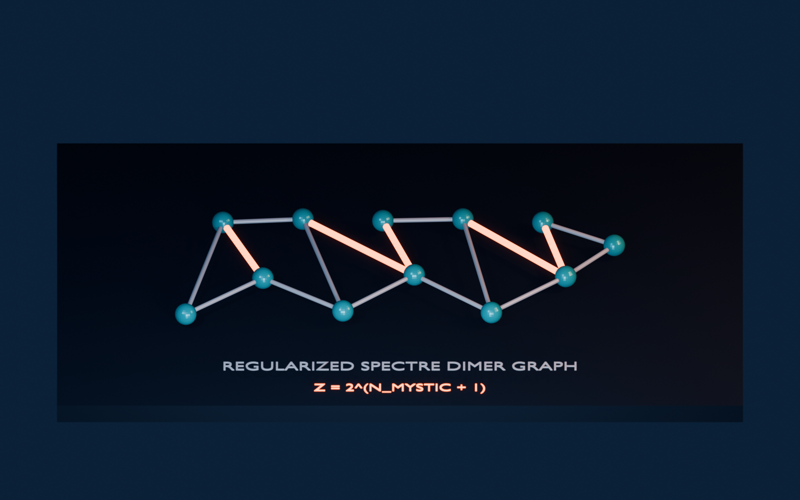

Dimers and constrained models
Exact classical and quantum dimer results on a regularized Spectre graph, with their physical limits.
What a dimer model asks
A perfect matching covers every graph vertex exactly once with selected edges called dimers. Singh and Flicker regularize the Spectre graph by adding a “gold” vertex to 13-edge environments so each decorated tile contributes identical connectivity and the graph remains bipartite. Forced dimers then leave independent two-way choices on Upper Mystics plus one boundary choice. Some raw finite Spectre patches admit no perfect matching until that boundary/decorative construction is regularized, so the exact result is graph-decoration dependent.[22]

Exact classical and quantum results
The classical partition function is exactly Z=2NMystic+1. The thermodynamic free energy per dimer is ln(2)/[3(5+√15)]≈0.02604, much smaller than the cited square-lattice value 0.583. Finite-patch FKT counts on S2-S6 verify the combinatorial result.[22]
In the Rokhsar-Kivelson quantum model, the independent Mystic choices give an exact eigenbasis for every V/t; a flipped Mystic costs 2t. Test monomers can separate arbitrarily far at no additional energy, so the model is deconfined across the stated parameter family. Singh’s 2025 thesis places this result beside algorithms and constrained models on Ammann-Beenker, Penrose, and random graphs.[70]
Interpretation and limits
These are exact results for a specified regularized adjacency graph, not measurements on a tile-shaped solid. Aperiodicity alone does not imply a quantum spin liquid, and changing vertices, couplings, boundaries, or graph regularization changes the model. A physical proposal must identify microscopic degrees of freedom, energy scales, disorder, preparation, and observables before borrowing the exact combinatorial language.
See also
Materials science and fluids, Waves, acoustics, and photonics, Spectre tile
Categories: Mathematics · Physics